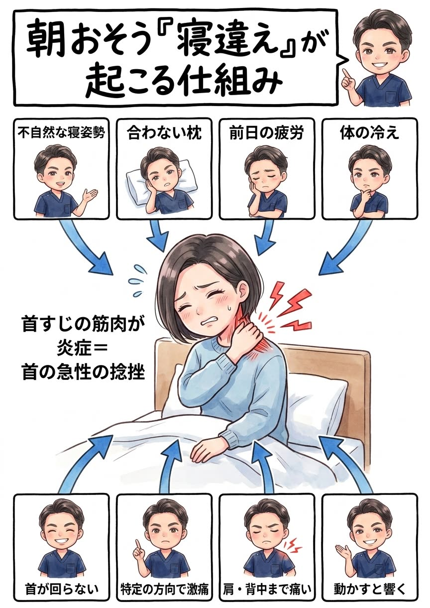

朝、目が覚めた瞬間の「あ、やった…」。寝違えは首の急性の捻挫です。最初の対処を間違えなければ、回復はぐっと早くなります。
つらい真っ最中の方は、このページの「NG対処」だけでも確認してください。寝違えは初期対応で回復期間が変わります。健康保険にも対応しています。
寝違えの正体は、睡眠中の不自然な姿勢によって首すじの筋肉や靭帯に起きた急性の捻挫・筋損傷（炎症）です。深酒や極度の疲労で寝返りが減った夜、合わない枕、ソファでのうたた寝——首が長時間ムリな角度で固定されると、片側の筋肉（肩甲挙筋や斜角筋など）が引き伸ばされ続けたり、血流が途絶えたりして、目覚めた瞬間に「痛くて動かせない」状態になります。
ここで多くの方が誤解しています。寝違えは「たまたま変な寝方をしたから」起こるのではありません。本当の原因は、その前から“寝違えやすい首”になっていたことにあります。普段からストレートネックや肩こりで首まわりの筋肉が硬く縮んでいると、寝ている間のわずかな負荷にも耐えられず、簡単に損傷してしまうのです。柔らかい筋肉なら受け流せる負荷で壊れてしまう——だから、年に何度も寝違えを繰り返す方は「寝方が悪い」のではなく「首の環境そのもの」に原因があるのです。


「数日で痛みが引いたから、もう大丈夫」——そう思って終わりにしていませんか。でも、考えてみてください。痛みが消えても、寝違えの引き金になった“硬くて寝違えやすい首”は、何ひとつ変わっていません。 痛みが消える＝首の環境が治った、ではないのです。
ストレートネックや慢性的な首こりで硬く縮んだ首を放置したまま日常に戻れば、次に少し無理な寝方をした夜、また同じことが起こります。「年に何度も寝違える」のは、まさにこれが理由です。
では、どうすればいいのか。答えはひとつです。急性の炎症を正しく抑えたうえで、寝違えを招く“首の環境”＝首こり・ストレートネック・枕を根本から整え、繰り返さない首づくりを「継続」する。これに尽きます。 その場の痛み取りで終わらせず、原因に合った正しいことを、続ける——それだけが、寝違えループから抜け出す道です。
今まさにつらい痛みは、我慢する必要はありません。急性期は炎症を抑えて回復を早めることを最優先に、患部そのものを無理に触らず、首の負担を減らす周辺部位からのソフトなアプローチ・アイシング指導・テーピングで、痛みの期間を最短化します。寝違えは急性のケガのため健康保険での施術にも対応しています。とはいえ、痛みを取るだけで終われば、それは対症療法。“寝違えやすい首”が残っている限り、また繰り返しやすいからです。だから当院は「今の激痛への対応」と「繰り返さない首への一手」を、必ずセットで行います。
原因は、あなたの首そのものではなくあなたの“生活”の中にあります。どんな枕で、どんな姿勢でスマホを見て、どれだけ首まわりが冷え、どれだけ疲れを溜めているか——この生活習慣の中に、首を“寝違えやすく”している犯人がいます。だから当院は、症状だけでなくあなたの生活そのものをとことん深くお聞きし、原因が潜む習慣にメスを入れます。ここまで踏み込む接骨院・整体は多くありません。これが当院の考える“本当の根本治療”です。
急性期や、ボキボキが苦手・怖い方へ。刺激の少ないやさしい矯正で、首に負担をかけず無理なく整えます。お子さまやご年配の方にも安心です。
痛みが落ち着いた再発予防の段階で、「ボキボキしてスッキリしたい」という方へ。首まわりの環境を整えるダイナミックな矯正も当院の得意技です。
「ボキボキしてくれる整体を探していた」という方も、ぜひご相談ください。今のお身体の状態（急性期か回復期か）に合わせて、最適な方をお選びいただけます。
患部を無理に触らず、周辺部位からのソフトな施術・アイシング・テーピングで炎症を抑え、「今の激痛」を最短で落ち着かせます。楽な姿勢・冷やし方もお伝えします。
痛みが落ち着いたら、寝違えを招いたストレートネックや慢性的な首こりを整え、少しの負荷では壊れない、しなやかな首をつくります。
ここを整えることが、再発を防ぐいちばんのカギ。枕の高さ、寝る姿勢、スマホの見方、首の冷え対策まで、あなたの生活に合わせて具体的にお伝えし、継続をサポートします。

いつから・どの動きで痛むかを確認。痛みが強い場合は無理のない体勢で伺います。

炎症の程度と動ける範囲をチェックし、今日やるべきこと・避けることを明確にお伝えします。

周辺部位からのソフトな施術で回復を促進。落ち着いたら首の環境（姿勢・枕）まで整えて再発を防ぎます。
はい。寝違えは首まわりの急性の捻挫・筋損傷にあたるため、健康保険を使って施術を受けられるケースが多いです。保険証をお持ちのうえご来院ください。
軽度なら数日〜1週間程度で落ち着くことが多いですが、適切なケアでより早い回復が期待できます。1週間以上続く場合やしびれを伴う場合は早めにご相談ください。
発症直後は炎症が起きているため、強く揉む・温める・無理にストレッチするのは逆効果です。まず冷やして安静にしてください。